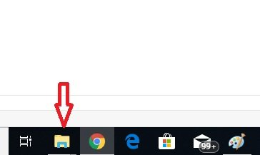

Windows 10
- 2015. július 29-én jelent meg.
-
A Microsoft eredeti tervei szerint ez lett volna utolsó Windows, a
jövőben csak frissítéseket adtak volna ki, Windows 11-et nem.
-
A Microsoft korábbi célja ezzel az volt, hogy 2023-tól minden Windowsos
számítógépen Windows 10 fusson.
-
A Windows 10-re az első évben a Windows 7 SP1, a Windows 8 (8.1) és a
Windows Phone 8 (8.1) rendszerrel rendelkezők ingyenesen frissíthettek.
-
A rendszer használható aktiválás nélkül is, és a korábbi verzióktól
eltérően a frissítések is telepíthetőek a Windows Update segítségével.
-
A Windows 10 forráskódja 2017. június 24-én kiszivárgott az internetre,
ami lehetőséget adhat újabb támadásokra.
- A Windows 10 támogatása 2025. október 14-én fog véget érni.
Újdonságok
-
A Windows 10-ben számos újdonság mellett új memóriatömörítési eljárás
jelent meg, mellyel a rendszer gyorsabb hozzáférést biztosít az
alkalmazásoknak az adatokhoz, valamint csökkenti a lapozófájl
használatát.
-
A rendszer közelebb hozta a Windows Phone 8.x, Windows 8.x és az Xbox
One rendszerek kódbázisát.
-
A rendszerindítás és leállítás lényegesen gyorsabb lett, a megspórolt
időt azonban „áttették” az újraindításhoz.
-
Ezt a leállítás és a hibernált mód ötvözésével érték el. Indításnál a
rendszer nem tölti be sorjában a különféle illesztő- és egyéb
programokat, hanem egy leállítás előtti memóriaképet tölt vissza a
háttértárról.
-
A módszer hátránya a nagyobb lemezterület-igény, illetve illesztőprogram
hiba, vagy rendszerbeállítás módosítás esetén újraindítást igényel.
-
A fejlesztők visszahelyezték a Start menüt a rendszerbe, így a
felhasználók választhatnak, hogy a Start menüt vagy a kezdőképernyőt
akarják-e használni. Táblagép módban pedig a csempés felület lett az
alapértelmezett.
Frissítések és támogatás
-
A verziószám úgy állt össze, hogy az évszám utolsó két számjegyét és a
hónap számát egybetettük (pl.: 1507 = 2015. 07.). Ez alól viszont több
kivétel is volt.
-
2019-től a Microsoft változtatott a kódneveken. Az első szám – ugyanúgy,
mint a verziószámnál – az évszám utolsó két számjegyéből áll, a második
része viszont a félévet jelzi (19H1; 19H2). E változtatás 2020 második
félévétől a verziószámokra is igaz.
-
2017 októberében a Microsoft bejelentette, hogy befejezi a Windows 10
Mobile funkciófrissítésekkel való támogatását, és ezután már csak
biztonsági és hibajavításokat kaptak az eddig támogatott verziók. Az
utolsó verzió (őszi alkotói frissítés)
- A koronavírus-járvány miatt a Microsoft úgy döntött, hogy meghosszabbítja a Windows 10 1709-es üzleti és oktatási verzióinak támogatását 6 hónappal.
- A Microsoft meghosszabbította a 2018. októberi frissítés bizonyos verzióinak (Home, Pro) támogatását 6 hónappal.
Változatok
- Windows 10 Home (otthoni felhasználóknak)
- Windows 10 Pro (otthoni és vállalati felhasználóknak)
- Windows 10 Enterprise (csak vállalati ügyfeleknek)
- Windows 10 Education (oktatási célra)
- Windows 10 Pro for Workstations (nagy teljesítményű munkaállomásokhoz)
- Windows 10 LTSC (kritikus fontosságú eszközökre)
- Windows 10X (A Windows 10 két képernyős eszközökre optimalizált változata. Fejlesztése leállt.)
- Windows 10 Lean (Még nem jelent meg. Valószínűleg fejlesztés alatt áll.)
- Windows 10 Mobile (A támogatása 2020. január 14-én befejeződött.)
- Windows 10 Mobile Enterprise (A támogatása 2020. január 14-én befejeződött.)
- Windows 10 S (Megszűnt és S mód-ként használható tovább a Home, Pro és Enterprise verziókban.)
Windows Fájlkezelő
- Ez a számítógép fájlkezelője, amellyel elérheti az összes fájlt, adatot, képet és mappát. A fájlok és mappák PC -n történő megnyitásához a File Explorer programon keresztül kell mennie.

Kritikák
- A rendszert érik kritikák is. Régebbi számítógépeken egyes hardverelemek nem működnek megfelelően (főképp a vezeték nélküli eszközök). Többen kritizálják a félévenként kiadott frissítéseket, ami alapján úgy gondolják, hogy a rendszer mindig félkész állapotban jelenik meg. További éles bírálatokat kapott a Microsoft a megváltozott adatkezelési szabályok miatt, amelyeket egyesek úgy értelmeznek, hogy a Windows 10 kémkedik.
- A legismertebb kritikus pontnak talán mégis a régebbi Windows rendszerek 10-es rendszerre való frissítésének erőszakos, néhol gerillamarketingre.
Csempék, asztal
- A kikapcsoláshoz és az újraindításhoz a főkapcsolóra kell nyomnunk, a kijelentkezés és a zárolás pedig a felső szekcióban lévő felhasználói fióknál oldható meg.
- A Start menüben lévő élő csempék nevükhöz méltóan folyamatosan tele vannak élettel, változnak a rajtuk megjelenített vizuális és szöveges tartalmak, és körülbelül ennyi maradt a Windows 8 teljes képernyős csempés kezdőoldalából.
- Itt jegyzendő meg, hogy a Start menü kitehető akár teljes képernyőre is, illetve az élő csempéit kényünk kedvünk szerint át lehet szervezni, és az egyes csoportok neveit is bármikor át lehet írni.

Alkalmazások
- A korábban Metro néven emlegetett, majd pedig Modern névre átkeresztelt Windows-alkalmazások mostantól már nemcsak teljes képernyőn, hanem akár ablakban is futtathatók, tehát úgy, mint a jól megszokott, hagyományos programok.
- A Snap Assist funkció lényege, hogy amennyiben egy ablakot a képernyő széléhez húzunk, akkor az automatikusan kitölti a kijelző felét, a másik oldalon pedig felsorakoznak azok az ablakok, melyekkel mi nagy valószínűség szerint a másik térfelet be szeretnénk tölteni.
Fontos tudnivalók a Windows 10 frissítése előtt
- Csak egy nappal a Windows 10 hivatalos elindításához maradt a világon, több tízmillió számítógép-felhasználó várja a kezüket a Windows operációs rendszer legújabb verziójára.
- Mivel a Windows 10 a Windows 7 és a Windows 8.1 felhasználók számára ingyenes frissítésként is elérhető, a legtöbb Windows 7 / 8.1 rendszert futtató felhasználó már regisztrált az ingyenes frissítéshez, és a következő napokban a Windows Update rendszeren keresztül a Windows 10-et fogja megkapni.
- Ez azt jelenti, hogy sok olyan felhasználó van, akik még mindig aggódnak a frissítéssel kapcsolatban, és nem rendelkeznek teljes körű tisztázással az ingyenes frissítésről és arról, hogy hogyan érkezett.